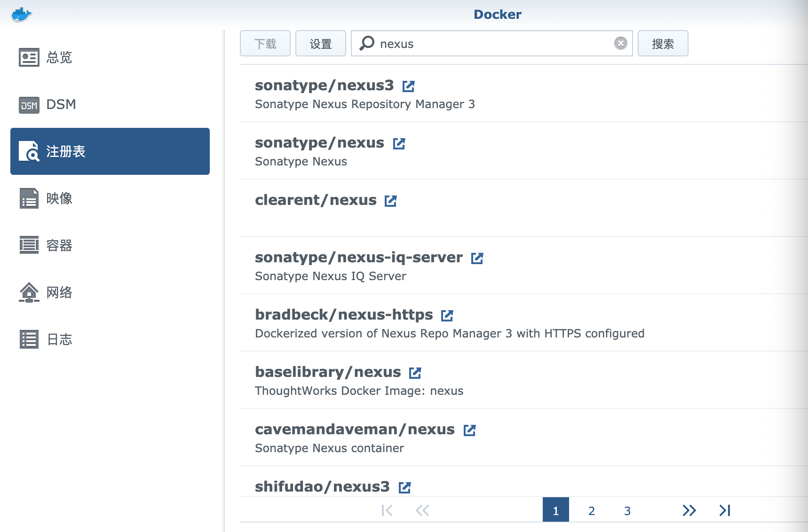
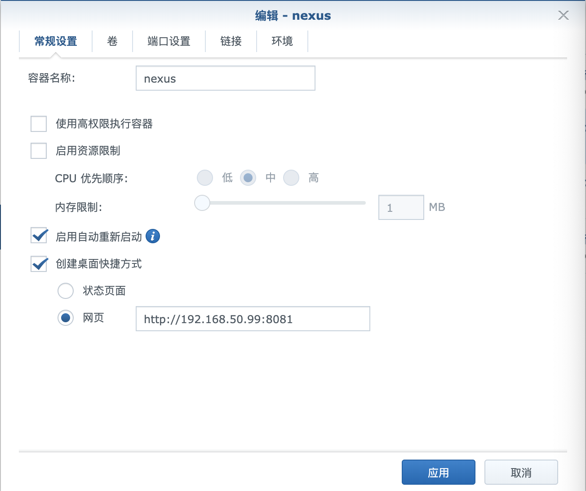
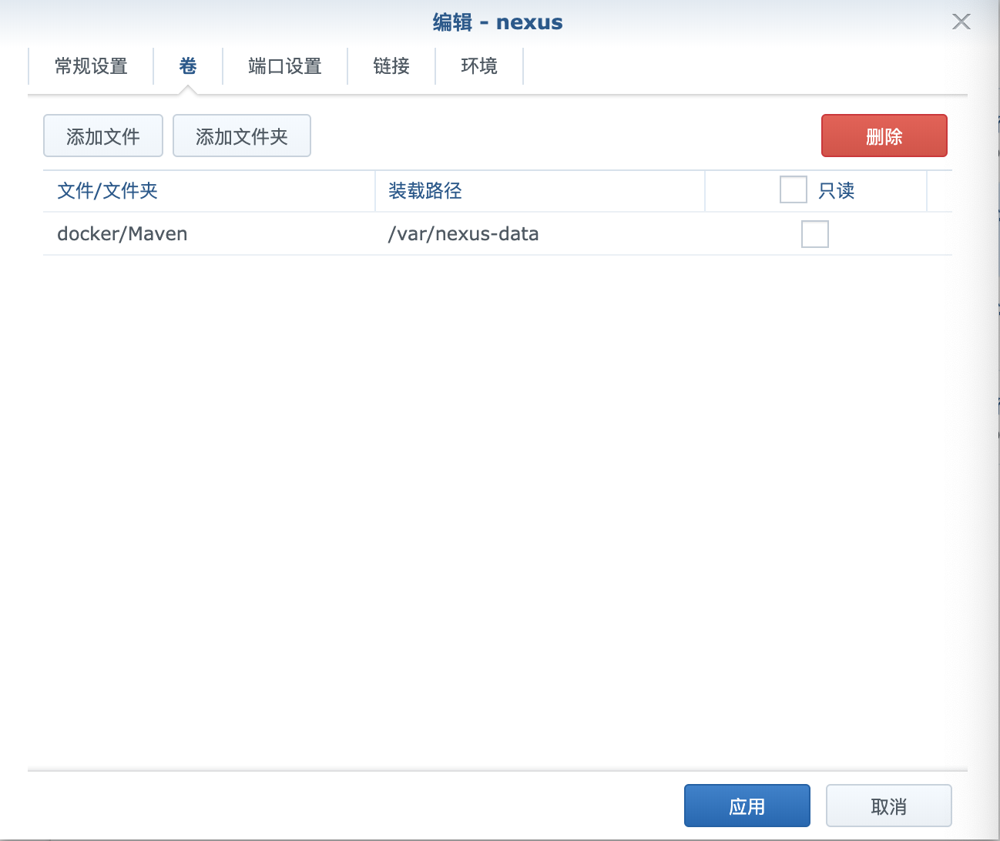
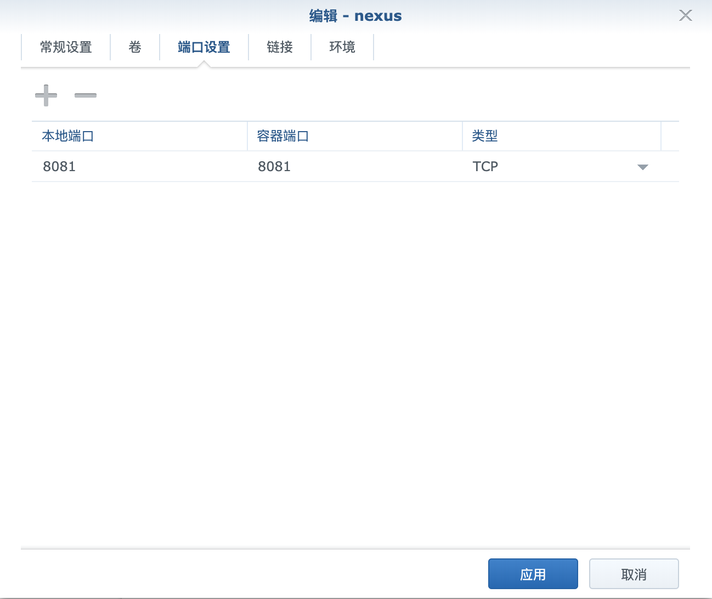
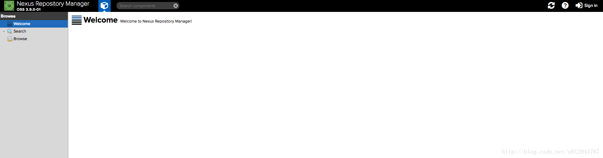
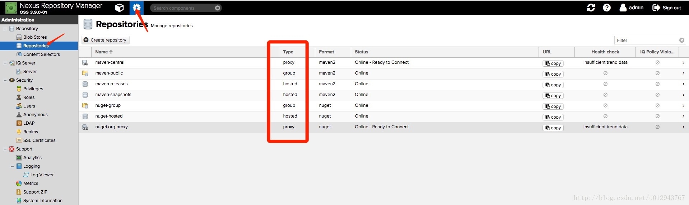
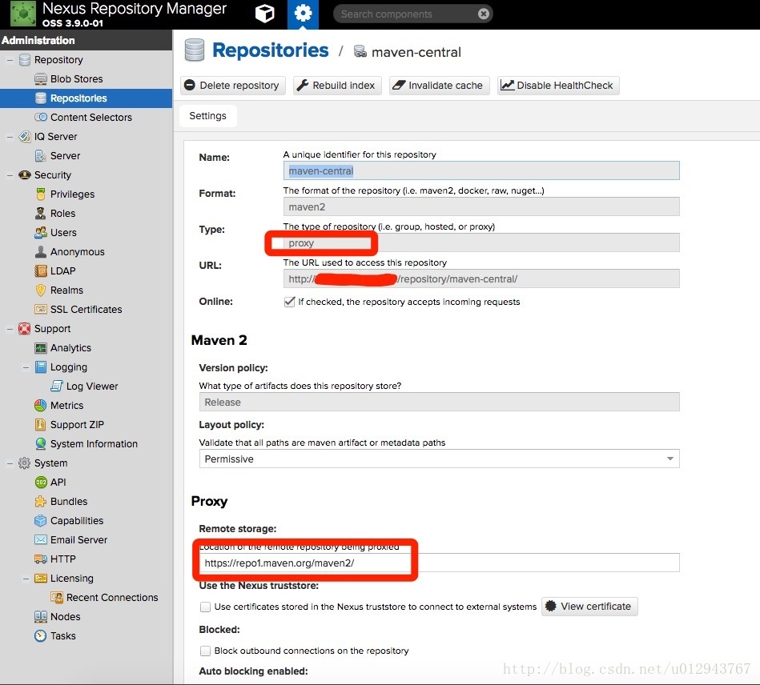
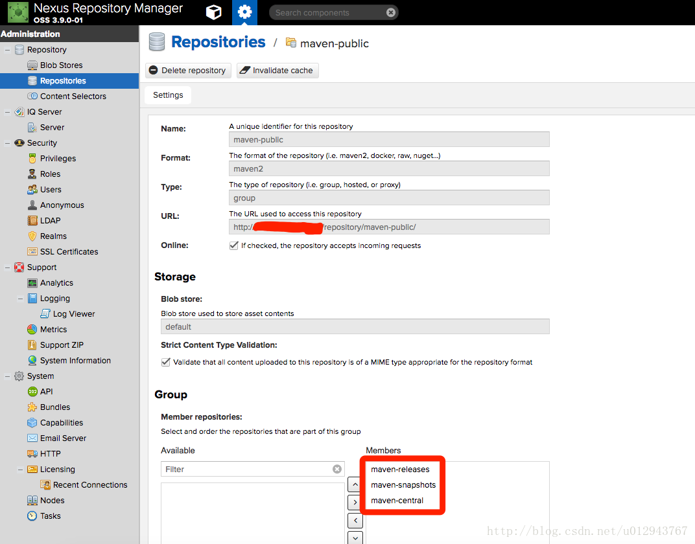
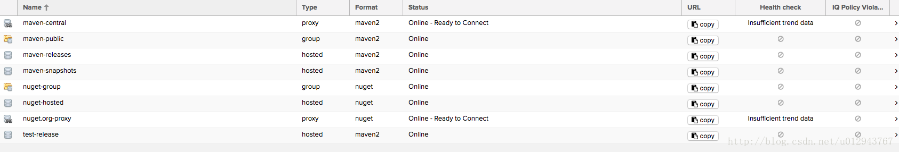
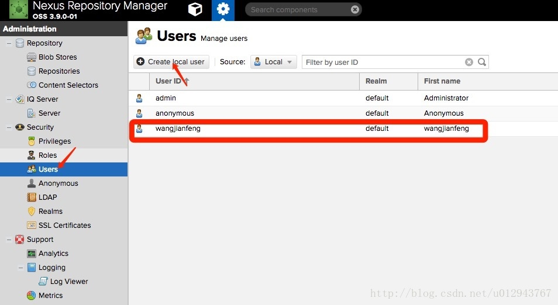

由于Gradle和Maven依赖方式不一样，没法进行本地项目依赖，所以需要把Gradle项目打包发布到Maven仓库。发布到公共仓库又不太好，所以决定搭建个私有仓库，刚好家里有群辉Synology DS918+，可以通过Docker来搭建Maven私服。
安装Nexus
群辉上的Docker通过图形化的界面进行操控，所以不需要进行命令行操作。
在注册表中搜索Nexus，对sonatype/nexus3项目进行双击下载映像。
 在映像中双击sonatype/nexus3创建容器，编辑nexus设置，启用自动重新启动和创建桌面快捷方式
 在卷中添加映射文件夹 本地文件路径 / 装载路径(/var/nexus-data)
 进行端口映射,将本地端口映射到容器端口.
 启动Nexus，点击桌面的Nexus快捷启动或者通过
http://ip:8081，打开Nexus网址。
 点击右上方的Sign in进行登录，初始账号为admin，初始密码通过容器的详情里终端查看admin.password里的密码.登录后修改密码
 可以看到默认情况下
Nexus会帮我们创建了几个仓库，仔细观察红色框住的地方，里面有几种仓库的类型，解释如下：proxy远程仓库的代理，比如说nexus配置了一个central repository的proxy,当用户向这个proxy请求一个artifact的时候，会现在本地查找，如果找不到，则会从远程仓库下载，然后返回给用户。hosted宿主仓库，用户可以把自己的一些仓库deploy到这个仓库中group仓库组，是nexus特有的概念，目的是将多个仓库整合，对用户暴露统一的地址，这样就不需要配置多个仓库地址。
下面我们仔细看一下里面的一些仓库。点击
maven-central仓库:

可以看到是一个proxy类型的仓库，他代理的远程仓库地址是https://repo1.maven.org/maven2/。后退，在进入
maven-public查看:

可以看到这是一个group类型的仓库，里面包含了maven-releases/maven-snapshots/maven-central仓库，意思是我们只需要在本地添加这个仓库，则可以依赖到上述3个仓库中的库了。
创建仓库
创建仓库
点击Create repository,然后选择maven2(hosted)然后输入仓库名称（test-release）。在version policy中选择这个仓库的类型，这里选择release,在Deployment policy中选择Allow redeploy
 创建用户
点击左侧菜单栏的Users菜单，然后点击Create local user.我这里创建了一个用户，账号密码都是：wangjianfeng

Java Gradle项目上传
在build.gradle中添加maven-publish插件
plugins {
id "maven-publish"
}
设置插件参数
//打包源码
task sourceJar(type: Jar) {
from sourceSets.main.allSource
}
publishing {
publications {
maven(MavenPublication) {
//指定group/artifact/version信息，可以不填。默认使用项目group/name/version作为groupId/artifactId/version
groupId project.group
artifactId project.name
version project.version
//如果是war包填写components.web，如果是jar包填写components.java
from components.java
//配置上传源码
artifact sourceJar {
classifier "sources"
}
}
}
repositories {
maven {
//指定要上传的maven私服仓库
url = "http://你的maven私服地址/repository/maxrocky/"
//认证用户和密码
credentials {
username 'admin'
password 'admin123'
}
}
}
}